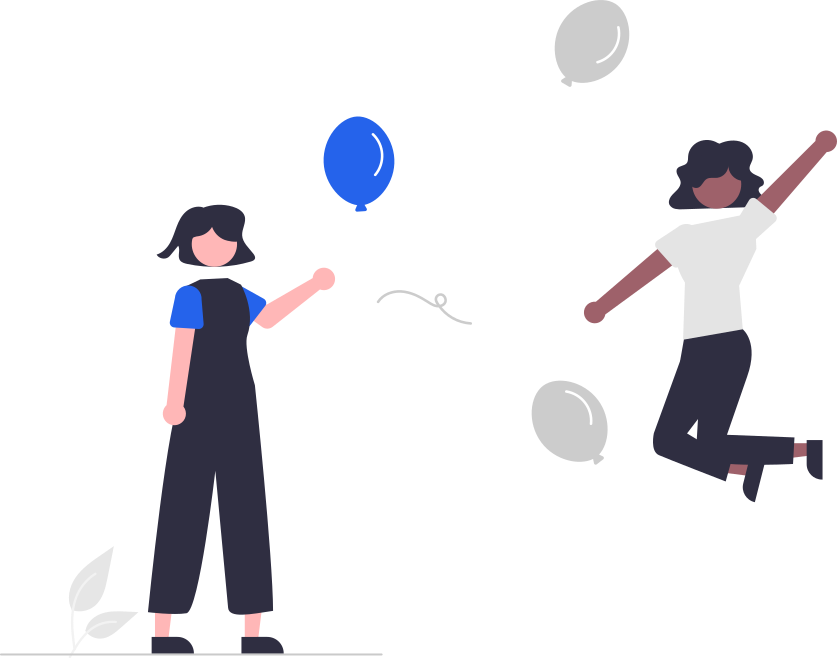

Dianalisis oleh AI Machine Learning
Selamat, Peserta!
Kuis telah selesai dianalisis. Inilah cara belajar yang paling pas dan seru untuk dirimu:

Profil Modalitas Utama
Gaya Belajar Visual
Komposisi Modalitas Belajar Kamu
Setiap modalitas menunjukkan aktivitas yang melengkapi gaya belajarmu:
Visual (Melihat)
40%
Auditori (Mendengar)
30%
Kinestetik (Bergerak)
30%
Tips Belajar Paling Cocok Buatmu
Cobalah langkah mudah ini saat belajar di sekolah atau di rumah:
Pesan EduBot untuk Kamu:
Setiap anak istimewa dan punya cara hebat untuk memahami dunia. Gaya belajar adalah pilihan aktivitas yang paling menyenangkan untukmu, dan kamu selalu bisa mencoba semuanya!